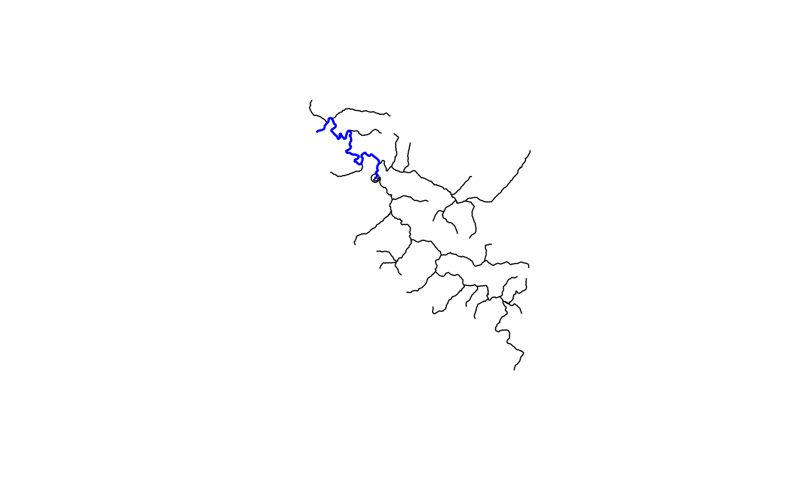

Provides a full feature network navigation function that will work with local or web service data. Parameter details provide context.
navigate_network(
start,
mode = "UM",
network = NULL,
output = "flowlines",
distance_km = 10,
trim_start = FALSE,
trim_stop = FALSE,
trim_tolerance = 5
)list, integer, sf, or sfc if list must be a valid NLDI feature if integer must be a valid comid. If sf, must contain a "comid" field.
character chosen from c(UM, DM, UT, or DD)
sf should be compatible with network navigation functions If NULL, network will be derived from requests to the NLDI
character flowline or a valid NLDI data source
numeric distance to navigate in km
logical should start be trimmed or include entire catchment?
logical should stop(s) be trimmed or include entire catchment(s)? # Not supported
numeric from 0 to 100 percent of flowline length. If amount to trim is less than this tolerance, no trim will be applied.
# \donttest{
navigate_network(list(featureSource = "nwissite", featureID = "USGS-06287800"),
"UM",
output = "flowlines",
trim_start = TRUE)
#> All intersections performed in latitude/longitude.
#> Reading NHDFlowline_Network
#> Spherical geometry (s2) switched off
#> Spherical geometry (s2) switched on
#> Writing NHDFlowline_Network
#> Simple feature collection with 8 features and 137 fields
#> Geometry type: LINESTRING
#> Dimension: XY
#> Bounding box: xmin: -107.8095 ymin: 45.39128 xmax: -107.7482 ymax: 45.46134
#> Geodetic CRS: NAD83
#> # A tibble: 8 × 138
#> comid fdate resolution gnis_id gnis_name lengthkm reachcode
#> * <int> <dttm> <chr> <chr> <chr> <dbl> <chr>
#> 1 12781087 2009-06-15 23:00:00 Medium 779903 Bighorn Ri… 0.176 10080015…
#> 2 12781093 2009-06-15 23:00:00 Medium 779903 Bighorn Ri… 1.26 10080015…
#> 3 12781103 2009-06-15 23:00:00 Medium 779903 Bighorn Ri… 2.79 10080015…
#> 4 12781107 2009-06-15 23:00:00 Medium 779903 Bighorn Ri… 1.42 10080015…
#> 5 12781111 2009-06-15 23:00:00 Medium 779903 Bighorn Ri… 1.43 10080015…
#> 6 12781115 2009-06-15 23:00:00 Medium 779903 Bighorn Ri… 1.44 10080015…
#> 7 12781119 2009-06-15 23:00:00 Medium 779903 Bighorn Ri… 1.40 10080015…
#> 8 12781181 2009-06-15 23:00:00 Medium 779903 Bighorn Ri… 0.207 10080015…
#> # ℹ 131 more variables: flowdir <chr>, wbareacomi <int>, ftype <chr>,
#> # fcode <int>, shape_length <dbl>, streamleve <int>, streamorde <int>,
#> # streamcalc <int>, fromnode <dbl>, tonode <dbl>, hydroseq <dbl>,
#> # levelpathi <dbl>, pathlength <dbl>, terminalpa <dbl>, arbolatesu <dbl>,
#> # divergence <int>, startflag <int>, terminalfl <int>, dnlevel <int>,
#> # uplevelpat <dbl>, uphydroseq <dbl>, dnlevelpat <dbl>, dnminorhyd <dbl>,
#> # dndraincou <int>, dnhydroseq <dbl>, frommeas <dbl>, tomeas <dbl>, …
# }
source(system.file("extdata", "walker_data.R", package = "nhdplusTools"))
hydro_location <- list(comid = 5329339,
reachcode = "18050005000078",
reach_meas = 30)
hydro_location <- sf::st_sf(
hydro_location,
geom = nhdplusTools::get_hydro_location(data.frame(hydro_location),
walker_flowline))
net <- navigate_network(hydro_location,
mode = "DM", network = walker_flowline,
trim_start = TRUE, distance_km = 20)
plot(sf::st_geometry(walker_flowline))
plot(sf::st_geometry(hydro_location), add = TRUE)
plot(sf::st_geometry(net), add = TRUE, col = "blue", lwd = 2)
